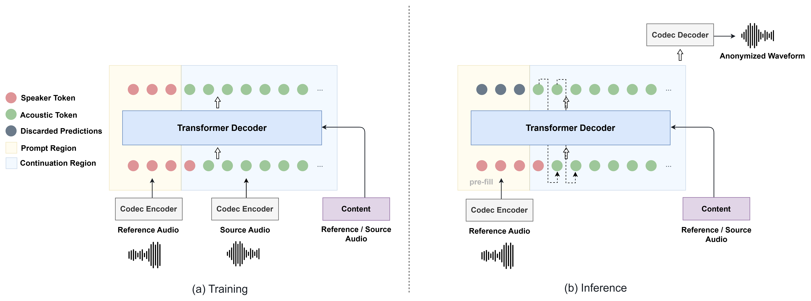

LiveAnon
Improving Privacy and Utility in Streaming Speaker Anonymization with Codec Language Models
Seoul National University
Abstract
Streaming speaker anonymization must jointly preserve privacy, utility, and real-time feasibility, yet existing systems often lose paralinguistic information through constrained content representations or require additional emotion-specific modeling. We propose LiveAnon, a streaming codec language model that uses continuous ASR encoder features for source content and codec prompt continuation for target identity, while a capped RVQ delay pattern reduces multi-codebook generation latency. Under the VoicePrivacy Challenge 2024 protocol, LiveAnon improves over the matched fixed-target SVA setting across all metrics, increasing emotion UAR from 39.71% to 44.09% and semi-informed EER from 15.92% to 32.28%. LiveAnon also achieves competitive privacy--utility performance against the offline VPC26 baselines, demonstrating that strong anonymization and paralinguistic utility can be maintained in a streaming setting.
System Overview
Streaming anonymization by continuous content conditioning and acoustic prompt continuation.

Audio Quality Comparison
Comparison with SVA, a recent streaming speaker anonymization baseline. Four utterances were randomly selected from LibriTTS dev-clean and test-clean.
| Sample | Original (Src) | SVA | LiveAnon (Ours) |
|---|---|---|---|
|
Example 1
“But here they were-the Yankees-a battle had to be fought. We were ordered forward.” |
|||
|
Example 2
“They would think that they might do so too, and that would make you a great deal of trouble.” |
|||
|
Example 3
“The Squierses are a selfish, hard fisted lot, and the old lady, especially, is a well known virago. But they could not have proven a case against Lucy, if she was innocent, and all their threats of arresting her were probably mere bluff.” |
|||
|
Example 4
“The Saxons had now been for four centuries in Britain, the older inhabitants of which-Celts like the Gauls and Irish-they had cruelly harassed, just as the Milesian Irish oppressed their Belgic predecessors, and as the Normans, in turn, will be found oppressing both Celt and Saxon in England and Ireland.” |
Headphones are recommended. All methods are presented on the same source utterances for direct comparison.